Japonsko je stát ve východní Asii,
v Tichém oceánu. Na západě ho Korejský průliv odděluje od pobřeží Koreje,
Japonské moře ho odděluje od Severní Koreje a Ruska.
Japonské ostrovy Rjúkjú z východu ohraničují Východočínské moře a na jihu sahají až k Tchaj-wanu.
Ministerský předseda: Fumio Kišida Trendy
Hlavní město: Prefektura Tokio
Rozloha: 377 973 km²
Populace: 125,7 milionů (2021) Světová banka
Hrubý domácí produkt: 4,941 bilionů USD (2021) Světová banka
Státní zřízení: Demokracie, Parlamentní systém, Unitární stát, Konstituční monarchie
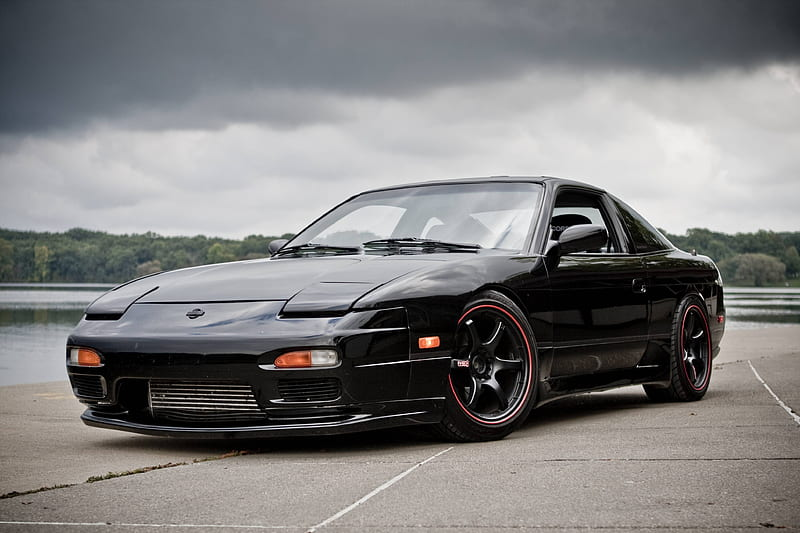
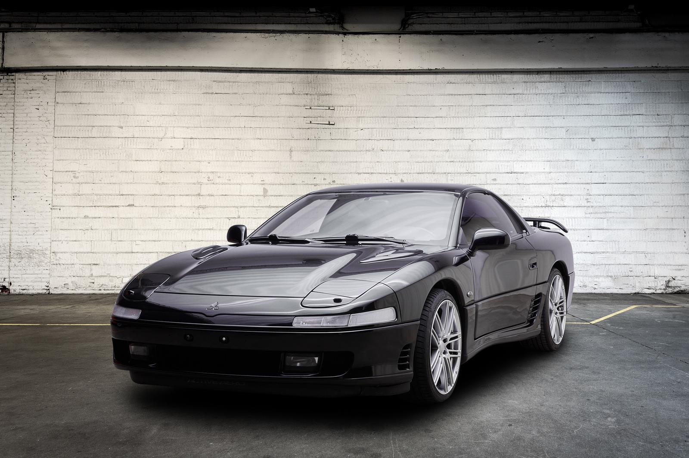
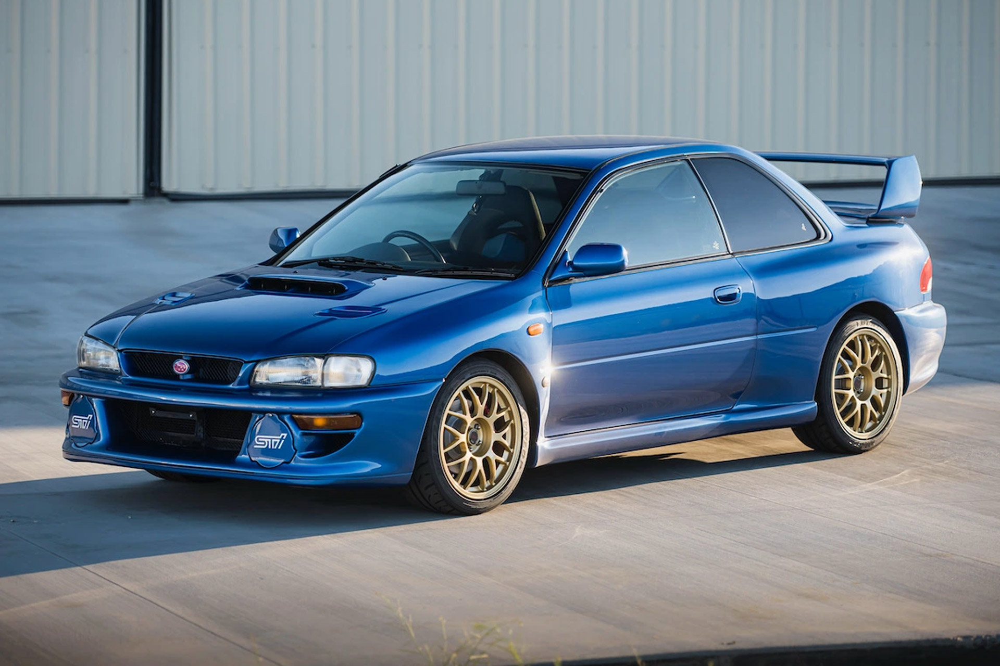
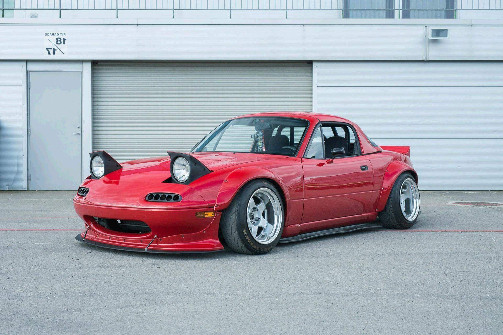
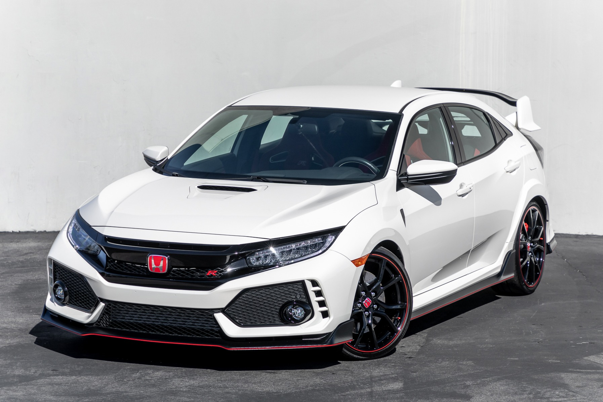
Sushi je tradiční japonské jídlo, které se stalo oblíbeným po celém světě.
Tvoří ho kombinace lepkavé rýže, čerstvého rybího masa, zeleniny nebo mořských plodů,
které jsou obvykle zakrájené na tenké plátky.
Sushi se podává s omáčkami jako sójovým a wasabi.
Existuje mnoho různých stylů sushi, včetně nigiri, maki, sashimi a temaki.
Je to nejen chutné jídlo, ale také zážitek pro smysly.
Precizní příprava ingrediencí jsou důležitou součástí tohoto gastronomického umění.
Sushi je symbolem jemnosti, čistoty a dokonalé rovnováhy chutí.
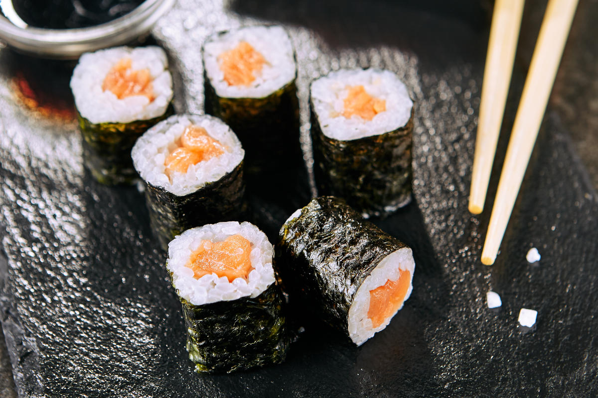
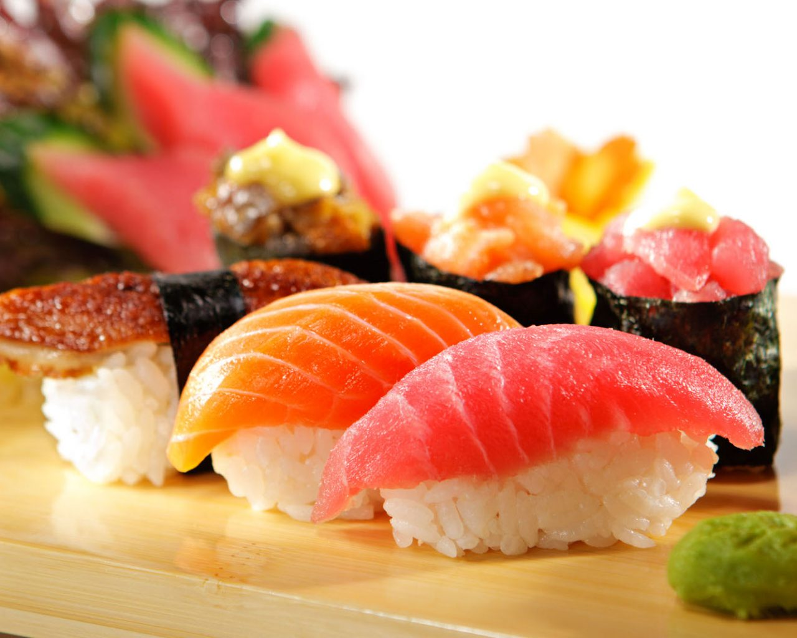
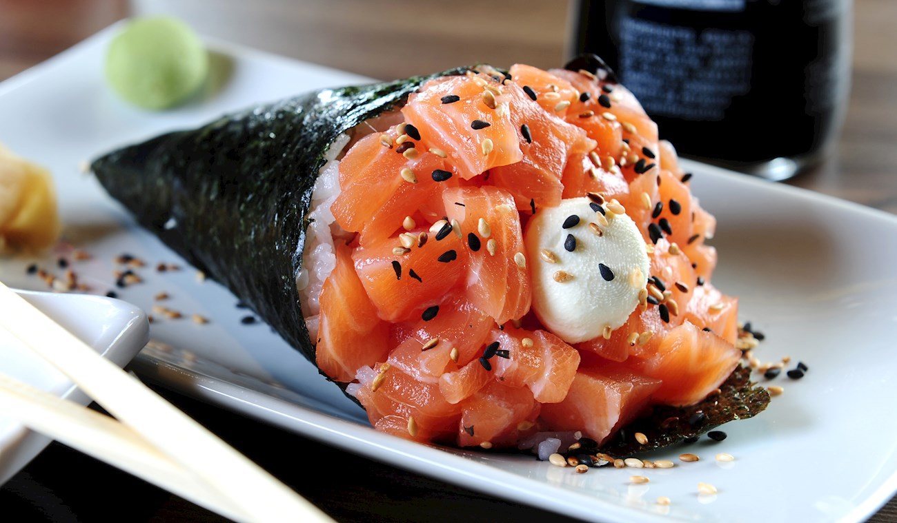
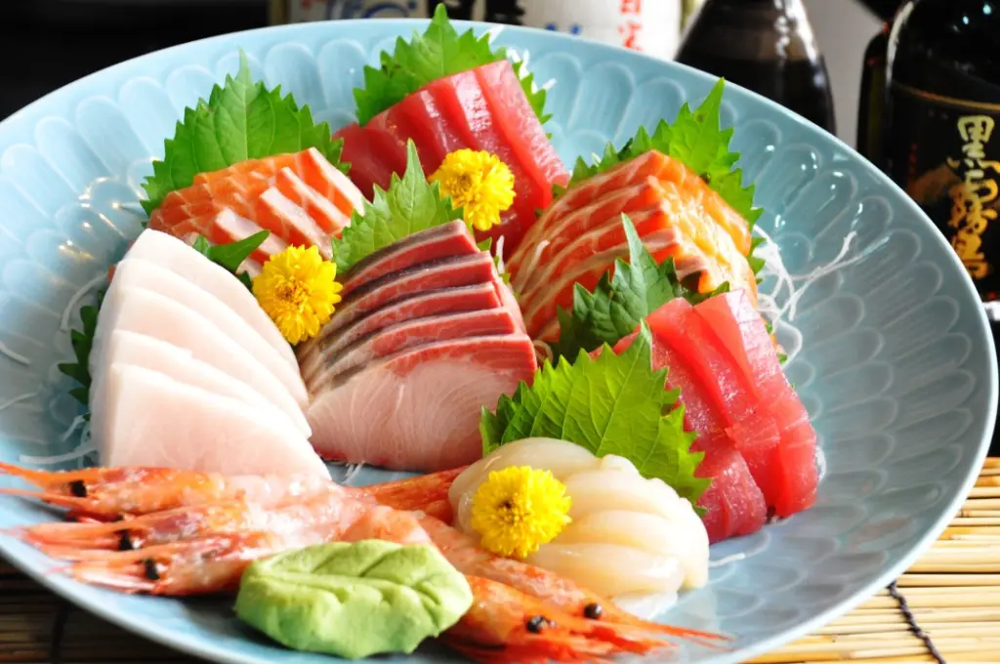
Anime je japonská animovaná forma s unikátním uměleckým stylem a poutavými příběhy.
S různými žánry, jako je akce, dobrodružství, romantika a fantasy, si získalo velkou popularitu po celém světě.
Vypráví složité příběhy a rozvíjí postavy, čímž oslovuje emoce diváků.
Seriály jako "Naruto", "One Piece", "Bleach" a "Demon Slayer" získaly světovou slávu.
Anime ovlivnilo i mimo obrazovku, inspirovalo filmy, videohry a módní trendy.
S bohatou historií a oddanými fanoušky, anime neustále inovuje a fascinuje svým vizuálním zpracováním a poutavými příběhy.
| # | Image | Name | Type | Episodes |
|---|---|---|---|---|
| 1 | 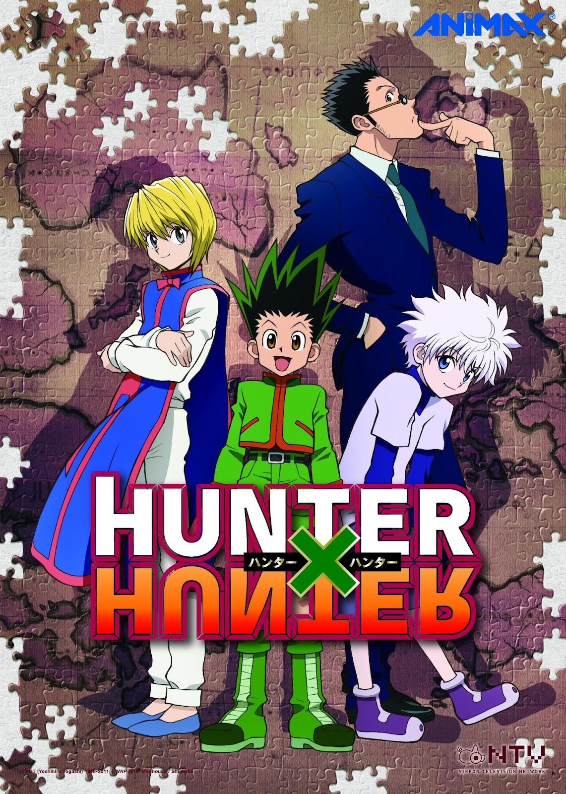 |
Hunter x Hunter | TV/Series | 148 |
| 2 | 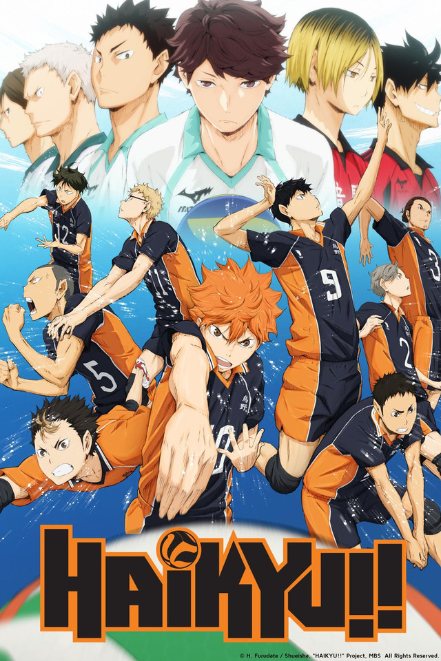 |
Haikyuu! | TV/Series | 85 |
| 3 | Koe no katachi | Movie | 1 | |
| 4 | Charlotte | TV/Series | 13 | |
| 5 | Boku no Pico | TV/Series | 3 | |
| 6 | Black Clover | TV/Series | 170 | |
| 7 | Enen on Shouboutai | TV/Series | 48 | |
| 8 | 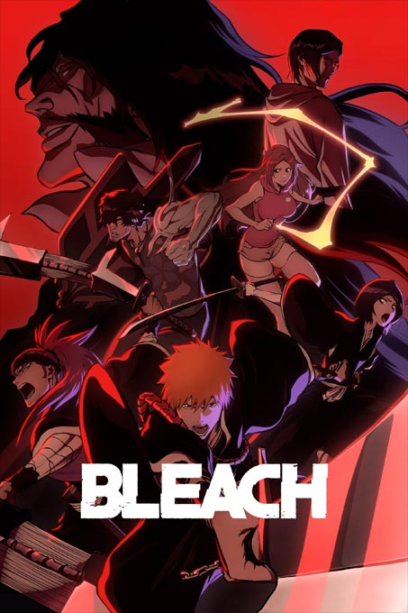 |
Bleach | TV/Series | 366 |
| 9 | Naruto | TV/Series | 220 | |
| 10 | 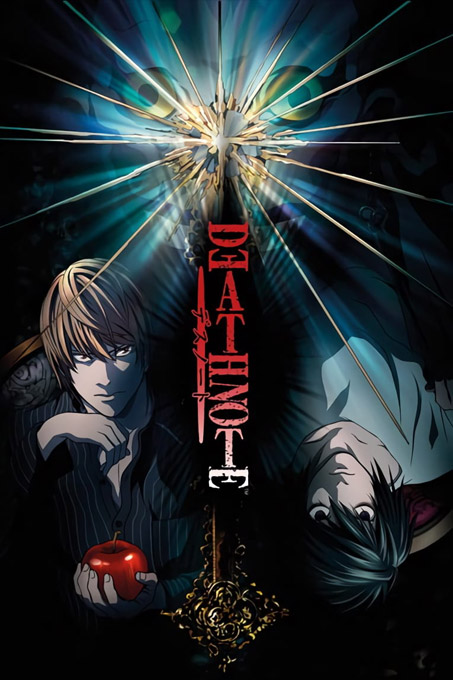 |
Death Note | TV/Series | 37 |